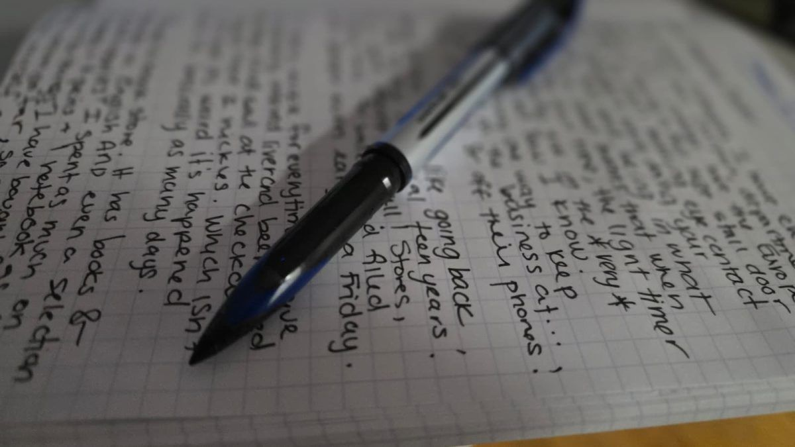
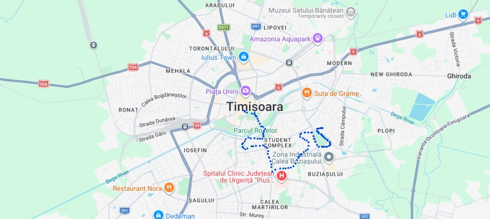
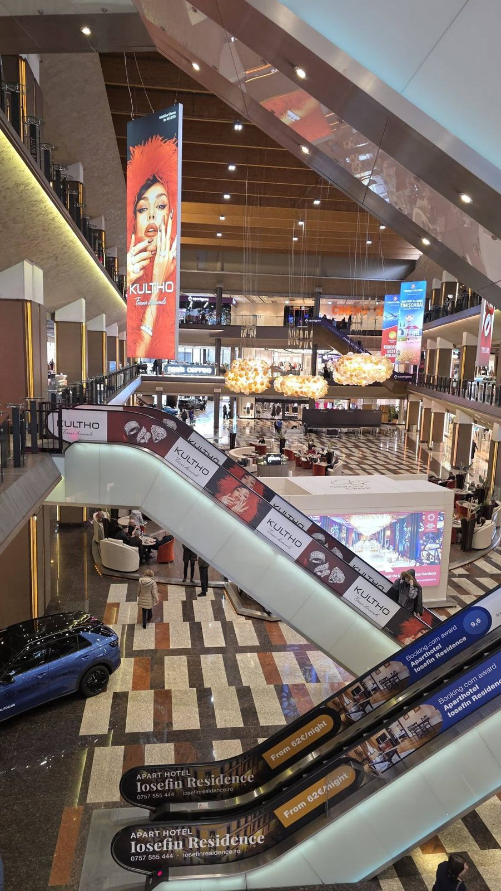
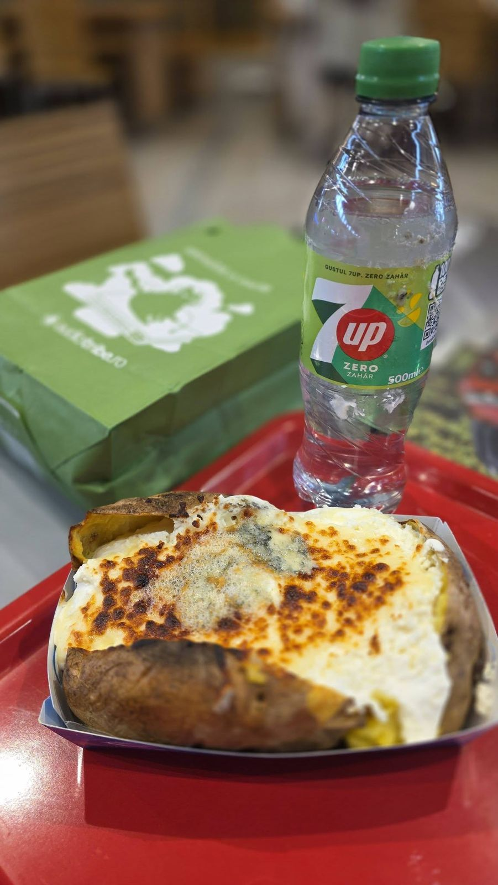
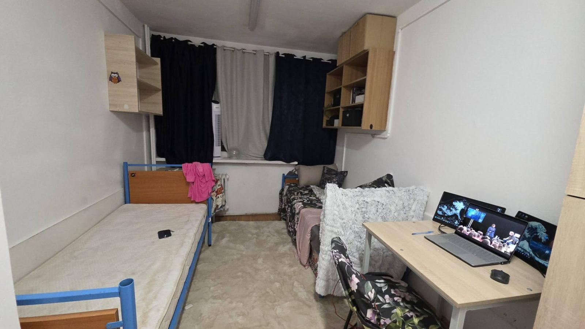

Journey 01 · Timișoara Note 4 of 11 Field Note
Day One

After the initial panic, I did what I always do: Adapt, plan and revise.
I checked the wardrobes for any left items (none), turned back on the sink-blocking refrigerator to start it cooling, and opened a window to get some air flow. I still had another night in the hotel, and two full days ahead to create my new temporary home. Plenty of time for something that I am very good at, language barrier or not:
Shopping.
I immediately turned my “I can’t do this” feeling into a checklist, because checklists are basically how my nervous system negotiates crisis. You could track my exact mental state on any given day in the military based solely on the number of post-it notes currently covering my desk and computer screen.
Lesson One: Walking

There is something oddly grounding about being forced into simplicity. You get to stop worrying about controlling the big picture, and focus on what you can actually do:
- find the thing
- buy the thing
- get the thing home
- repeat
My checklist was coming along beautifully. And so, I asked for help on identifying possible stores for shopping. I received several suggestions of different shops, but all under a common theme of “close enough you can walk there.”
Now, I do not want to lump in all Americans when I say this, but I would consider myself fairly typical as far as Americans go when it comes to deciding whether to walk or drive someplace. Anything that is within sight of my personal driveway? Most likely a walk. Beyond that? Well, now that all depends….
Here is what I have learned in my short time in Timisoara so far:
It’s a short walk / it’s a close walk: This could mean anything from a 5 minute walk to a 20 minute walk. If it’s less than 2K, it’s a “short” walk.
It’s a bit of a walk: This means anything more than 20 minutes but (probably) less than 45 minutes, though that may depend on the quality of the walking views, availability of coffee shops and (I assume?) weather.
Be careful not to accidentally walk to Serbia: This is any walk of an hour or more, and yes, the Serbian border is quite close.
I did end up walking, to the first store at least on this first day. The walk was actually really lovely and quite easy to navigate. I crossed a bridge, walked through a couple of parks, observed some interesting architecture. All of this I will reflect on later, because the important thing I learned is that walking, even when it is 40 degrees outside (That would be 4 degrees centigrade), will make me sweat.
Not in a glistening “look how shiny and bright her skin looks today!” kind of way, more like a “have you been running a marathon and also why are you bright red and not wearing a jacket in the freezing weather?” kind of way.
The other thing I learned about walking distances is that they are one way, and when you shop and have several bags of pillows, pots, pans and blankets, it’s best just to hire an uber for the return trip.
Lesson 2: Accidental Time Travel
At some point I ended up at Iulius Shopping Center, and it felt like stepping into an alternate timeline. A busy mall! People actually shopping! Families, students, groups of friends… the social hum was so familiar it surprised me. My brain kept trying to label it as “the past” it was so familiar to my teenage-memories, but that not quite right, is it?

It’s not the past. It’s just a different present. That tiny realization hit me harder than expected: It was my first real reminder that I can’t keep using U.S. narratives as if they’re universal.
Lesson 3: Do not overstay your welcome
This deserves its own paragraph, because it was both delightful and mildly traumatic.
The mall restroom was spotless. Full stall doors. Actual privacy. My soul felt respected in a way it never feels back in the ol’ US of A. The bathroom had a long hall, stylish decorations, chandeliers – and simply just some of the cleanest stalls I have ever been in, and that includes shopping in Tokyo. The doors were more like closet doors, a small green or red light on the outside letting you know what is and is not available, no awkward under the door checks or accidental stall-gap eye contact required.
Then, while I was still in the stall, the lights shut off.
No warning. Just sudden darkness, like the bathroom itself was politely informing me I had exceeded my allotted restroom time and needed to move along. Since these stalls featured those fully closing doors I had just moments before been crowing the benefits of, I was locked in absolute total darkness.
It was funny after the initial “WHAT” moment, but it was also oddly revealing. The same space that communicates dignity and care (privacy, cleanliness) also regulates behavior (timer). There were no signs or warnings. No bit of dimming light or warning blinking. Just environmental design doing what design does: subtly (or not so subtly) shaping behavior.
Welcome to my #1 philosophical field note of the semester, delivered via fluorescent lighting.
Lesson 4: Saved by the kindness of strangers
I have now had multiple near-misses where I have accidentally ordered liver.
This is not a culinary adventure. This is a series of misunderstandings that keep trying to become part of my personality.
Three times now, kind strangers intervened before I completed the purchase, which is both hilarious and genuinely meaningful. It’s one thing to feel independent in your home context. It’s another thing entirely to be linguistically vulnerable and realize how much your day depends on other people choosing to be decent.

I don’t want to romanticize everything, but I also don’t want to miss what’s real in this experience: There is a kind of caring that shows up in everyday moments, the small things that connect humans across language and culture barriers. Little actions that have big impacts. And the human understanding that yeah, liver is definitely not something that people should be surprised with is just one of those things that brings us together as humankind.
Lesson 5: My Natural Habitat (and a budget threat)
Some people find comfort in familiar food. Music. The feeling of a cozy sweater. A call home. The smell of grandmas cookies. Connecting with another stranger unexpectedly.
I found a bookstore. With English language books, art supplies and fancy pens. This is where my sense of self returned. I find comfort in paper and pens, and once I had a notebook and new pen in hand, I felt capable of anything. The fact that I spent as much on a new novel I did not need, a notebook and two overly fancy pens as I had just spent on a completely new bed set and room organizational system did make me briefly consider instituting personal financial sanctions against myself.
But it also made sense. In a new place, you reach for anchors and what is familiar. You buy what helps you stay legible to yourself. For me, books and a notebook are not just “stuff”, they’re continuity, and a way to feel stable again while I find my balance.
Also, if I’m going to be overwhelmed, I would like to be overwhelmed with a good pen.
Lesson 6: Pay Attention
The most surprising part of the day wasn’t any single event, it was what the day revealed about my attention. With a pen and notebook in hand, I started paying attention to everything:
- how people are moving through space
- what is assumed, and what is explained
- where the environment makes life easier
- where design enforces behavior
- what feels familiar, what feels unfamiliar, and why
I noticed the patterns on the sidewalk, indicating bike lanes verses walking spaces. The use of space both outside and within the mall, and how much of it was created for sitting, talking, and just enjoying the surroundings. I started looking at the artwork, the architecture, the graffiti… with my notebook and pen in hand, I felt fully myself in a way I had not in the previous days where I only had my digital notepads. Everything you’ve read in this posting is from my notebook scribbles, which were the leading image for this post.
Turns out, I have a very specific pathway to feeling stabilized in uncertainty: the pen and notebook help me flip from feeling acted on by the environment to actively relating to it. Being able to build a model of my surroundings and “how does this place work” instantly made me feel more relaxed, confident and in control. I am pretty sure I just learned something about myself in all of this.
Welcome home

I’ve learned a lot already just from talking to people, walking (and walking and walking and walking and…), and observing. I’m still tired and my sleep schedule is wildly wonky. But my room has come a long way, and it feels like somewhere I can be pretty happy for the next few months.
I don’t feel fully settled, but I do feel capable and more in control. The program officially kicks off with the new week, and I am excited for this next phase.
And that is enough of a start for me.
Originally published at fieldnotesfromabroad.com/2026/02/24/field-notes-day-one/